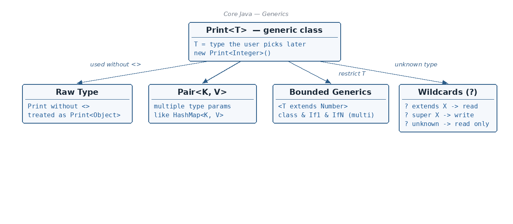

Why generics exist and what problem they solve · Writing a generic class (Print<T>) with a getter and setter · …
☕ 8 min read · 🎬 Video walkthrough · 📊 UML diagram · 💻 Runnable code
⚡ In a nutshell — Why generics exist and what problem they solve · Writing a generic class (Print<T>) with a getter and setter · Non-generic vs generic subclasses of a generic class · Using more than one type parameter (Pair<K, V>)
Imagine a box that can hold anything. If you put a shoe in it but expect a phone, you get a nasty surprise when you open it. Generics put a label on the box — "this box holds only Integers" — so the compiler stops you from putting the wrong thing in, before the program even runs.

Generics give you:
Print<Integer>, Print<String>, ...).A generic class declares a type parameter (commonly named T for "Type") in angle brackets after the class name. T then acts as a placeholder for a real type that the user chooses later.
public class Print<T> { // T is the type placeholder
T value;
public T getPrintValue() {
return value;
}
public void setPrintValue(T value) {
this.value = value;
}
}
class Main {
public static void main(String[] args) {
// Here we decide: T = Integer
Print<Integer> printObj = new Print<Integer>();
printObj.setPrintValue(10);
System.out.println(printObj.getPrintValue());
// Same class, different type: T = String
Print<String> textObj = new Print<>();
textObj.setPrintValue("hello generics");
System.out.println(textObj.getPrintValue());
// printObj.setPrintValue("oops"); // COMPILE ERROR — type safety!
}
}
Output:
10
hello generics
Remember:
Tis decided by the user of the class at object-creation time. One generic class = many type-safe variations.
When you extend a generic class, you have two choices:
The subclass is not generic itself, so it must fix the parent's type right there in the extends clause — you have to define it here:
public class ColorPrint extends Print<String> {
// ^^^^^^^^
// You have to define the type HERE (fixed forever)
}
class Main {
public static void main(String[] args) {
ColorPrint cp = new ColorPrint(); // no <> needed anymore
cp.setPrintValue("red"); // works with String only
System.out.println(cp.getPrintValue());
}
}
Output:
red
The subclass stays generic and simply passes the type parameter up to the parent. The final user still gets to choose the type:
public class ColorPrint<T> extends Print<T> {
// T is still open — the user decides later
}
class Main {
public static void main(String[] args) {
ColorPrint<Integer> cp = new ColorPrint<>();
cp.setPrintValue(42);
System.out.println(cp.getPrintValue());
}
}
Output:
42
A class can have several type parameters, separated by commas. The classic example is a key–value pair (K = Key, V = Value) — exactly how HashMap<K, V> works:
public class Pair<K, V> {
private K key;
private V value;
public void put(K key, V value) {
this.key = key;
this.value = value;
}
public K getKey() { return key; }
public V getValue() { return value; }
}
class Main {
public static void main(String[] args) {
Pair<String, Integer> pair = new Pair<>();
pair.put("age", 25);
System.out.println(pair.getKey() + " = " + pair.getValue());
}
}
Output:
age = 25
Sometimes only one method needs to be generic — not the whole class. Two rules from the notes:
public <K, V> void ...).public class GenericMethod {
// <K, V> comes BEFORE the return type 'void'
public <K, V> void printValue(Pair<K, V> pair1, Pair<K, V> pair2) {
if (pair2.getKey().equals(pair1.getKey())) {
System.out.println("Keys match!");
} else {
System.out.println("Keys are different");
}
}
public static void main(String[] args) {
Pair<String, Integer> p1 = new Pair<>();
p1.put("id", 1);
Pair<String, Integer> p2 = new Pair<>();
p2.put("id", 2);
new GenericMethod().printValue(p1, p2);
}
}
Output:
Keys match!
A raw type is what you get when you use a generic class without the angle brackets. Java allows it (for backward compatibility with pre-generics code), but you lose all type safety.
Print<String> x = new Print<>(); // proper, type-safe use
Print rawObj = new Print(); // RAW TYPE — no <>!
// Internally, the compiler treats a raw type as:
Print<Object> rawObject = new Print<Object>();
Because a raw type internally behaves like Print<Object>, you can put anything into it — and that is exactly the problem:
class Main {
public static void main(String[] args) {
Print rawObj = new Print(); // raw type
rawObj.setPrintValue(10); // fine
rawObj.setPrintValue("surprise"); // ALSO fine — compiler can't help!
// This compiles but EXPLODES at runtime:
// Integer i = (Integer) rawObj.getPrintValue();
// -> java.lang.ClassCastException
}
}
Remember: Raw type = generic class used without
<>. Internally it becomes<Object>. Avoid it — you throw away the whole point of generics.
By default T can be any type. Bounded generics restrict which types are allowed. Bounds can be used on generic classes and generic methods.
<T extends Number><T extends Number> means: T can be Number or a subclass of Number only (Integer, Double, Float, ...). Note: the word extends is used even if the upper bound is an interface — the bound type can be a class or an interface.
public class Print<T extends Number> { // only Number and its children
T value;
public T getValue() {
return value;
}
public void setValue(T value) {
this.value = value;
}
}
class Main {
public static void main(String[] args) {
Print<Integer> ok = new Print<>(); // Integer IS a Number -> OK
ok.setValue(100);
System.out.println(ok.getValue());
// Print<String> bad = new Print<>(); // COMPILE ERROR!
// String is not a Number
}
}
Output:
100
Why is this useful? Because inside the class you can now safely call Number methods on value (like value.intValue()), since the compiler knows T is at least a Number.
<T extends ClassName & Interface1 & InterfaceN>You can require T to satisfy several types at once:
<T extends Superclass & Interface1 & InterfaceN>
The rule: the first bound must be the concrete class; from the 2nd position onward you can have any number of interfaces. (Only one class is allowed — Java has single inheritance — but many interfaces are fine.)
ParentClass { m1() } ParentClass2 { m1() }
\ /
(OK) \ / (X — not allowed!)
v v
SubClass
obj.m1() -> which m1() would it be? Ambiguous!
In plain words: if two classes were allowed as bounds and both had a method m1(), then calling obj.m1() would be ambiguous — Java would not know which one you mean. Interfaces do not have this problem (classically they carry no method bodies), so any number of them is fine after the one class.
class ParentClass {
public void m1() { System.out.println("m1 from ParentClass"); }
}
interface Interface1 { default void i1() { System.out.println("i1"); } }
interface Interface2 { default void i2() { System.out.println("i2"); } }
// A type that satisfies all three bounds:
public class A extends ParentClass implements Interface1, Interface2 {
}
// Multi-bound generic class:
// class FIRST ------v then interfaces ----v
class Print<T extends ParentClass & Interface1 & Interface2> {
// ^^^^^^^^^^^ must be concrete (a class)
// from the 2nd: any number of interfaces
T value;
public void setValue(T value) { this.value = value; }
public T getValue() { return value; }
}
class Main {
public static void main(String[] args) {
Print<A> p = new Print<>(); // A meets ALL three bounds -> OK
p.setValue(new A());
p.getValue().m1();
}
}
Output:
m1 from ParentClass
?)Wildcards solve the famous List problem: List<Integer> is not a subtype of List<Number>, so a method taking List<Number> rejects a List<Integer>. The wildcard ? (meaning "some unknown type") fixes this.
There are three kinds:
<? extends UpperBoundClassName> — Upper bound wildcard — That class and below (itself + its subclasses) — You want to read values safely (e.g. sum a list of any kind of Number)<? super LowerBoundsClassName> — Lower bound wildcard — That class and above (itself + its superclasses) — You want to write/add values safely into the collection<?> — Unbounded wildcard — Completely unknown type — you can only read — You only look at elements (e.g. print them), never addimport java.util.Arrays;
import java.util.List;
public class WildcardDemo {
// 1) UPPER BOUND: accepts List<Number>, List<Integer>, List<Double>...
// "Number and below" — safe for READING as Number.
static double sum(List<? extends Number> list) {
double total = 0;
for (Number n : list) {
total += n.doubleValue();
}
return total;
}
// 2) LOWER BOUND: accepts List<Integer>, List<Number>, List<Object>...
// "Integer and above" — safe for WRITING Integers into it.
static void addNumbers(List<? super Integer> list) {
list.add(1);
list.add(2);
}
// 3) UNBOUNDED: any list at all — only READING is allowed.
static void printAll(List<?> list) {
for (Object o : list) {
System.out.println(o);
}
// list.add(5); // COMPILE ERROR — cannot add to List<?>
}
public static void main(String[] args) {
List<Integer> ints = Arrays.asList(1, 2, 3);
System.out.println(sum(ints)); // works even though it's
// List<Integer>, not List<Number>
List<Number> numbers = new java.util.ArrayList<>();
addNumbers(numbers);
System.out.println(numbers);
printAll(ints);
}
}
Output:
6.0
[1, 2]
1
2
3
Remember (PECS in simple words): if a method Produces values for you to read → use
? extends. If it Consumes values you put in → use? super. If you only ever read and don't care about the type at all → plain?.
class Print<T> { T value; ... }; the user picks the type: new Print<Integer>().extends Print<String>); generic subclass passes it along (ColorPrint<T> extends Print<T>).class Pair<K, V> — like HashMap's key and value.<>; internally treated as <Object>; avoid it.<T extends Number> → Number or its subclasses only; the bound may also be an interface.<T extends Class & Interface1 & InterfaceN> → the first bound must be the concrete class, interfaces from the 2nd onward (any number).? extends X = X and below (read); ? super X = X and above (write); ? = unknown (read only).👏 Found this useful? Give it a few claps so more developers discover it, and follow for the whole series — every article ships with a UML diagram, runnable code, a narrated video, and a companion PDF. Happy building! 🚀